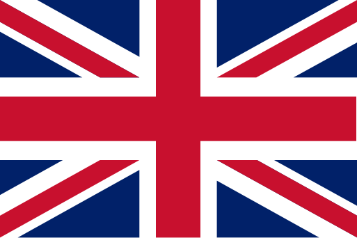

Europa
Con quali paesi confina il Regno Unito?
Il Regno Unito confina con un solo paese: l'Irlanda.
Vedi il Regno Unito sulla mappa interattiva →
Paesi confinanti del Regno Unito
Per numero di paesi confinanti il Regno Unito è al 142° posto nel mondo, a pari merito con altri 16 paesi.
Scheda del Regno Unito
- Capitale
- Londra
- Lingue ufficiali
- Inglese
- Valuta
- Sterlina britannica (GBP)
- Continente
- Europa
- Superficie
- circa 242.500 km²
- Paesi confinanti
- 1
Altri paesi in Europa
- Albania
- Andorra
- Austria
- Belgio
- Bielorussia
- Bosnia ed Erzegovina
- Bulgaria
- Cechia
- Cipro
- Città del Vaticano
- Croazia
- Danimarca
- Estonia
- Finlandia
- Francia
- Germania
- Grecia
- Irlanda
- Islanda
- Italia
- Kosovo
- Lettonia
- Liechtenstein
- Lituania
- Lussemburgo
- Macedonia del Nord
- Malta
- Moldavia
- Montenegro
- Norvegia
- Paesi Bassi
- Polonia
- Portogallo
- Principato di Monaco
- Romania
- Russia
- San Marino
- Serbia
- Slovacchia
- Slovenia
- Spagna
- Svezia
- Svizzera
- Ucraina
- Ungheria